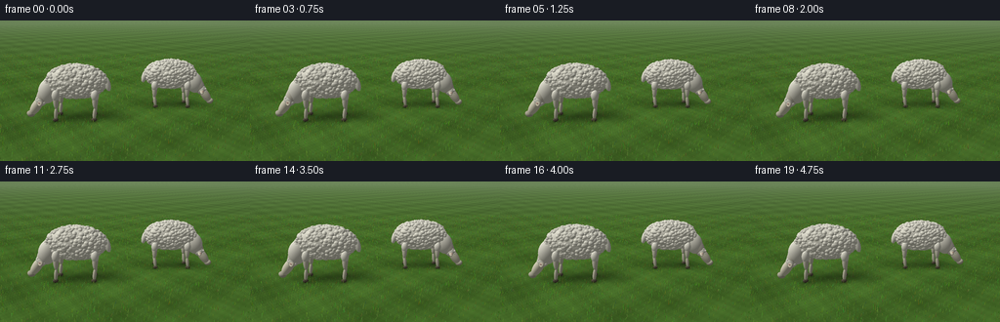
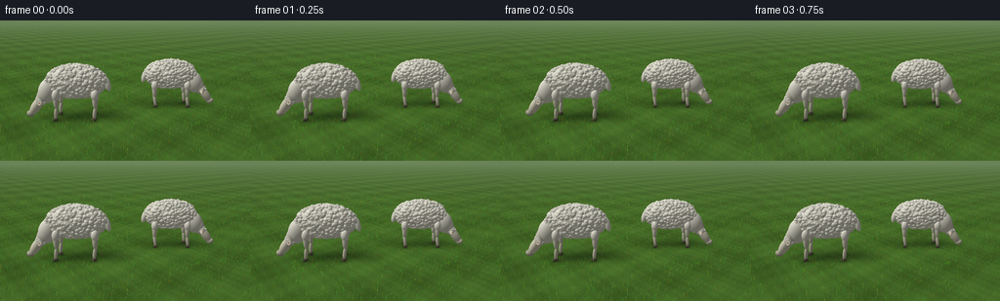
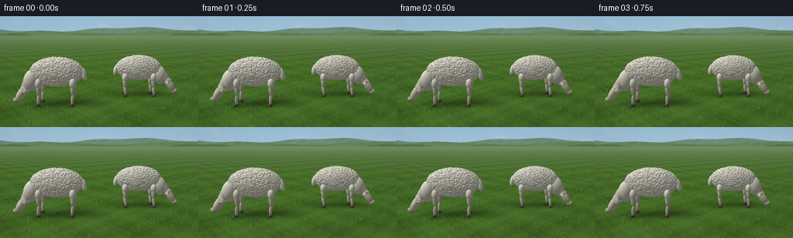
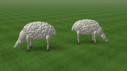
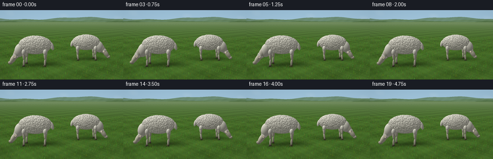

CODING AGENTS AS PIXEL WORLD MODELS
traex/GPT-6.1-Sol · instance_preservation_0017
点击播放 · 原生 RGB 像素
逐轮保存的候选
回放视频、检查图与代码变化。
每份候选均可单独播放。实际图片检查记录在下方工具轨迹中。
候选 01播放与检查图
点击播放 · 原生 RGB 像素


展开代码变化
--- 上一保存版本
+++ 本次保存版本
@@ -0,0 +1,310 @@
+"""Deterministic, entirely procedural RGB meadow and grazing sheep animation."""
+from pathlib import Path
+import json
+import numpy as np
+from PIL import Image, ImageFilter
+import artifact_io
+
+ROOT=Path(__file__).resolve().parent
+SPEC=json.loads((ROOT/'task_spec.json').read_text())
+W,H=SPEC['width'],SPEC['height']
+SS=3
+SW,SH=W*SS,H*SS
+rng=np.random.default_rng(1827)
+
+# Perspective camera, slightly above the sheep, fixed throughout the shot.
+CAM=np.array([0.,2.95,8.7])
+TARGET=np.array([0.,.65,0.])
+FWD=TARGET-CAM; FWD/=np.linalg.norm(FWD)
+RIGHT=np.cross(FWD,[0,1,0]); RIGHT/=np.linalg.norm(RIGHT)
+UP=np.cross(RIGHT,FWD)
+FOCAL=SW/(2*np.tan(np.deg2rad(42)/2))
+yy,xx=np.mgrid[:SH,:SW]
+D=(FWD[None,None,:]+(xx[...,None]+.5-SW/2)/FOCAL*RIGHT-(yy[...,None]+.5-SH/2)/FOCAL*UP).astype(np.float32)
+D/=np.linalg.norm(D,axis=2)[...,None]
+LIGHT=np.array([-.55,.80,.23]); LIGHT/=np.linalg.norm(LIGHT)
+
+
+def project(p):
+ v=np.asarray(p)-CAM
+ z=v@FWD
+ return np.stack([SW/2+(v@RIGHT)/z*FOCAL,SH/2-(v@UP)/z*FOCAL,z],axis=-1)
+
+
+def noise(x,z):
+ # Smooth, multi-scale analytic vegetation texture, not framewise noise.
+ return (.33*np.sin(1.43*x+1.87*z)+.24*np.sin(3.91*x-2.75*z)+
+ .16*np.cos(8.31*x+6.41*z)+.12*np.sin(18.76*x-12.28*z)+
+ .08*np.cos(35.42*x+29.63*z)+.07*np.sin(73.48*x-55.51*z))
+
+
+def background():
+ c=np.zeros((SH,SW,3),np.float32)
+ q=yy/SH
+ # Pale, lightly clouded spring sky.
+ sky=np.stack([157+34*q,194+24*q,218+12*q],-1).astype(np.float32)
+ clouds=np.maximum(0,np.sin(xx/SW*13+q*14)+.44*np.sin(xx/SW*31-q*24)-.9)
+ clouds*=np.exp(-((q-.15)/.16)**2)
+ c=sky*(1-clouds[...,None]*.17)+239*clouds[...,None]*.17
+ # Low soft distant ridges, intentionally quieter than the foreground.
+ for level,base,amp,col in [(0,.355,.045,[111,143,119]),(1,.405,.029,[103,134,97]),(2,.439,.018,[88,119,76])]:
+ line=(base+amp*np.sin(xx[0]/SW*(7+level*3)+level*2.2)+amp*.3*np.sin(xx[0]/SW*23+level))*SH
+ mask=yy>line[None,:]
+ texture=2*np.sin(xx*.13+yy*.17)+1.5*np.sin(xx*.03-yy*.23)
+ ridge=np.array(col)[None,None,:]+texture[...,None]
+ c[mask]=ridge[mask]
+ return c
+
+BKG=background()
+# Intersection of eye rays with gently textured ground plane.
+TG=np.where(D[:,:,1]<-.002,-CAM[1]/D[:,:,1],1.e6).astype(np.float32)
+GP=CAM+D*TG[...,None]
+VALID=(TG<70)&(TG>0)
+TX,TZ=GP[:,:,0],GP[:,:,2]
+N=noise(TX,TZ)
+# Many scales of green make an irregular pasture instead of a flat polygon.
+FINE=np.sin(TX*177+TZ*122)*np.sin(TX*71-TZ*171)
+GBASE=np.stack([67+N*13+FINE*3,103+N*19+FINE*5,38+N*9+FINE*2],axis=-1).astype(np.float32)
+HAZE=np.clip((TG-13)/75,0,.55)[...,None]
+GBASE=GBASE*(1-HAZE)+np.array([151,170,139])*HAZE
+
+# Consistent placement of grass stalks across the shot.
+grx=rng.uniform(-11,11,38000)
+grZ=rng.uniform(-11,7.5,38000)
+grh=rng.uniform(.028,.13,len(grx))
+# Foreground strands are taller and individually legible.
+grh*=np.where(grZ>3,1.5,1)
+grwidth=rng.uniform(.003,.009,len(grx))
+grcolor=np.stack([rng.uniform(53,102,len(grx)),rng.uniform(90,147,len(grx)),rng.uniform(24,58,len(grx))],1)
+grphase=rng.uniform(0,6.28,len(grx))
+# Projectable grass is kept; tiny distant stalks merge into field texture.
+grp=project(np.stack([grx,np.zeros(len(grx)),grZ],1))
+keep=(grp[:,2]>.9)&(grp[:,2]<22)&(grp[:,0]>-20)&(grp[:,0]<SW+20)&(grp[:,1]>-20)&(grp[:,1]<SH+30)
+grass=(grx[keep],grZ[keep],grh[keep],grwidth[keep],grcolor[keep],grphase[keep])
+
+# Wool patch placements on a single invariant body surface.
+def fleece_data(seed,count=630):
+ r=np.random.default_rng(seed)
+ n=r.normal(size=(count,3)); n/=np.linalg.norm(n,axis=1)[:,None]
+ size=r.uniform(.036,.070,count)
+ shade=r.uniform(.93,1.035,count)
+ return n,size,shade
+FLEECE=[fleece_data(49),fleece_data(153)]
+
+
+def rotation_z(a):
+ ca,sa=np.cos(a),np.sin(a)
+ return np.array([[ca,-sa,0],[sa,ca,0],[0,0,1.]])
+
+
+def ellipsoid(im,depth,center,radii,color,rot=None,kind='skin',shade=1):
+ center=np.asarray(center,float); radii=np.asarray(radii,float)
+ rot=np.eye(3) if rot is None else rot
+ # Conservative projected axis-aligned bounding box from a bounding sphere.
+ pr=project(center); rad=max(radii)
+ if pr[2]<rad+.1:return
+ extent=FOCAL*rad/(pr[2]-rad)*1.22
+ x0=max(0,int(pr[0]-extent-2)); x1=min(SW,int(pr[0]+extent+3))
+ y0=max(0,int(pr[1]-extent-2)); y1=min(SH,int(pr[1]+extent+3))
+ if x1<=x0 or y1<=y0:return
+ ray=D[y0:y1,x0:x1]
+ origin=(CAM-center)@rot
+ v=ray@rot
+ inv=1/(radii*radii)
+ A=np.sum(v*v*inv,axis=2); B=np.sum(v*origin*inv,axis=2)
+ C=np.sum(origin*origin*inv)-1
+ disc=B*B-A*C
+ t=(-B-np.sqrt(np.maximum(disc,0)))/A
+ old=depth[y0:y1,x0:x1]
+ mask=(disc>0)&(t>0)&(t<old)
+ if not np.any(mask):return
+ p=CAM+ray*t[...,None]
+ local=(p-center)@rot
+ normal=(local*inv)@rot.T
+ normal/=np.maximum(np.linalg.norm(normal,axis=2)[...,None],1e-8)
+ diffuse=np.maximum(0,normal@LIGHT)
+ lighting=.45+.53*diffuse
+ # Gentle blue skylight, green bounce from the pasture.
+ rgb=np.asarray(color)[None,None,:]*lighting[...,None]*shade
+ rgb+=np.clip(normal[:,:,1],0,1)[...,None]*np.array([0,1,3])
+ rgb+=np.clip(-normal[:,:,1],0,1)[...,None]*np.array([1,3,-1])
+ if kind=='wool':
+ px,py,pz=p[:,:,0],p[:,:,1],p[:,:,2]
+ curl=(np.sin(px*180+np.sin(py*95)*2+pz*100)*np.sin(py*191-pz*127))
+ fine=np.sin(px*412+py*310)*np.cos(py*331+pz*277)
+ rgb*= (1+.032*curl+.015*fine)[...,None]
+ # Warm light along the tops and subtle occlusion underneath the fleece.
+ rgb*= (.96+.04*np.clip((p[:,:,1]-.55)/.8,0,1))[...,None]
+ elif kind=='skin':
+ fine=np.sin(p[:,:,0]*213+p[:,:,1]*161)*np.sin(p[:,:,2]*245-p[:,:,1]*193)
+ rgb*= (1+.014*fine)[...,None]
+ target=im[y0:y1,x0:x1]
+ target[mask]=rgb[mask]
+ old[mask]=t[mask]
+
+
+def segment(im,depth,a,b,width,color,kind='skin',other=None):
+ a,b=np.asarray(a),np.asarray(b)
+ axis=(b-a); length=np.linalg.norm(axis); axis/=length
+ ref=np.array([0.,0.,1.]) if abs(axis[2])<.9 else np.array([0.,1.,0.])
+ u=np.cross(axis,ref);u/=np.linalg.norm(u)
+ v=np.cross(axis,u)
+ mat=np.stack([u,axis,v],1)
+ ellipsoid(im,depth,(a+b)/2,[width,length/2+width*.5,width if other is None else other],color,mat,kind)
+
+SHEEP=[(-1.27,.43,-1.,1.0),(1.34,-.73,1.,.95)]
+
+
+def sheep(im,depth,t,idx):
+ cx,cz,direction,scale=SHEEP[idx]
+ # Stance stays planted. Breathing is tiny; head makes slow grazing arcs.
+ phase=idx*2.15
+ breathe=.010*np.sin(t*1.7+phase)
+ bob=.020*np.sin(t*2.6+phase)+.009*np.sin(t*5.1+phase)
+ reach=.043*np.sin(t*1.25+phase)
+ sway=.018*np.sin(t*1.5+phase)
+ base=np.array([cx,0,cz])
+ def p(x,y,z):return base+scale*np.array([x*direction,y,z])
+ wool=np.array([242.,239.,221.])
+ skin=[211,207,184]
+ hoof=[89,82,65]
+ # Four narrow legs, slight bend and darker cloven hooves.
+ for lx,lz in [(-.48,-.24),(.47,-.24),(-.50,.26),(.50,.27)]:
+ foot=p(lx+.035,.073,lz)
+ knee=p(lx,.37,lz)
+ hip=p(lx,.79,lz)
+ segment(im,depth,hip,knee,.075*scale,skin)
+ segment(im,depth,knee,foot,.051*scale,[207,203,177])
+ ellipsoid(im,depth,p(lx+.035,.054,lz),np.array([.074,.050,.064])*scale,hoof)
+ # Narrow split at front of the hoof.
+ ellipsoid(im,depth,p(lx+.037,.050,lz+.056),np.array([.008,.034,.008])*scale,[51,46,35])
+ ellipsoid(im,depth,p(lx,.70,lz),np.array([.102,.15,.10])*scale,wool,kind='wool')
+ # Hanging docked tail at the rump.
+ segment(im,depth,p(-.77,1.10,0),p(-.85,.80,.025),.083*scale,wool,kind='wool')
+ # Neck inclined toward the mouthful of grass; visible between shoulder and face.
+ segment(im,depth,p(.65,.99,0),p(.98+reach,.43+bob,.02+sway),.190*scale,[223,218,197],kind='wool',other=.175*scale)
+ ellipsoid(im,depth,p(.75,.76,.0),np.array([.255,.345,.23])*scale,wool,rotation_z(direction*.30),kind='wool')
+ # Fleece body: an underlying solid coat plus hundreds of modest curls.
+ bodycenter=p(0,1.015+breathe,0)
+ bodyrad=np.array([.79,.44,.36])*scale
+ ellipsoid(im,depth,bodycenter,bodyrad,wool,kind='wool')
+ n,sizes,shades=FLEECE[idx]
+ for nrm,r,sh in zip(n,sizes,shades):
+ center=bodycenter+nrm*(bodyrad-r*.33*scale)
+ ellipsoid(im,depth,center,np.array([r*1.1,r,r])*scale,wool,kind='wool',shade=sh)
+ # Face's long axis descends diagonally from crown to grass, like real grazing sheep.
+ ang=direction*(-.97)
+ headcenter=p(1.07+reach,.355+bob,.032+sway)
+ rot=rotation_z(ang)
+ ellipsoid(im,depth,headcenter,np.array([.285,.128,.142])*scale,[223,218,192],rot,'skin')
+ # A wool cap at the forehead; face itself remains short-haired.
+ cap=p(.939+reach,.515+bob,.027+sway)
+ ellipsoid(im,depth,cap,np.array([.155,.151,.159])*scale,wool,kind='wool')
+ for k in range(16):
+ a=k*2.399
+ v=np.array([np.cos(a)*.11,np.sin(a)*.09,np.sin(k*4.2)*.105])*scale
+ ellipsoid(im,depth,cap+v,np.array([.049,.042,.046])*scale,wool,kind='wool',shade=.99)
+ # Both ears, held sideways from the head. Outer surfaces are cream, inset flesh muted pink.
+ for side in [-1,1]:
+ start=p(.948+reach,.508+bob,side*.118+sway)
+ tip=p(.900+reach,.465+bob,side*.335+sway)
+ segment(im,depth,start,tip,.061*scale,[211,202,177],other=.036*scale)
+ ellipsoid(im,depth,(start+tip)/2+np.array([0,.014*scale,0]),np.array([.047,.016,.098])*scale,[171,142,126],rotation_z(direction*.2))
+ # One near-side eye is clearly visible in each animal's downturned head.
+ eye=p(1.026+reach,.404+bob,.146+sway)
+ ellipsoid(im,depth,eye,np.array([.028,.022,.010])*scale,[114,106,85],rotation_z(ang))
+ ellipsoid(im,depth,eye+np.array([0,0,.006]),np.array([.018,.014,.007])*scale,[29,27,21],rotation_z(ang))
+ ellipsoid(im,depth,eye+np.array([-.005,.005,.011]),np.array([.004,.004,.003])*scale,[233,232,209])
+ # Blunt cream muzzle and nostril, low in the grass. Small jaw cycles suggest chewing.
+ jaw=.004*np.sin(t*8+phase)
+ muzzle=p(1.235+reach,.144+bob,.032+sway)
+ ellipsoid(im,depth,muzzle,np.array([.108,.082,.111])*scale,[189,184,161],rotation_z(direction*.30))
+ ellipsoid(im,depth,p(1.268+reach,.165+bob,.119+sway),np.array([.023,.013,.008])*scale,[61,56,43],rotation_z(direction*.4))
+ segment(im,depth,p(1.205+reach,.105+bob+jaw,.112+sway),p(1.278+reach,.104+bob+jaw,.097+sway),.004*scale,[103,94,70])
+ ellipsoid(im,depth,p(1.230+reach,.093+bob-jaw,.036+sway),np.array([.075,.035,.078])*scale,[187,180,151])
+
+
+def triangle(im,zbuf,pts,colors):
+ # Thin grass blades are shaded triangles with z-tested meadow/animal occlusion.
+ pts=np.asarray(pts)
+ x0=max(0,int(np.floor(pts[:,0].min()))); x1=min(SW,int(np.ceil(pts[:,0].max()))+1)
+ y0=max(0,int(np.floor(pts[:,1].min()))); y1=min(SH,int(np.ceil(pts[:,1].max()))+1)
+ if x1<=x0 or y1<=y0:return
+ if (x1-x0)*(y1-y0)>2000:return
+ a,b,c=pts
+ denom=(b[1]-c[1])*(a[0]-c[0])+(c[0]-b[0])*(a[1]-c[1])
+ if abs(denom)<1e-7:return
+ Y,X=np.mgrid[y0:y1,x0:x1];X=X+.5;Y=Y+.5
+ u=((b[1]-c[1])*(X-c[0])+(c[0]-b[0])*(Y-c[1]))/denom
+ v=((c[1]-a[1])*(X-c[0])+(a[0]-c[0])*(Y-c[1]))/denom
+ w=1-u-v
+ invz=u/a[2]+v/b[2]+w/c[2]
+ # Convert forward-camera z to ray travel distances for common depth buffer.
+ zz=1/np.maximum(invz,1e-8)
+ rd=D[y0:y1,x0:x1]@FWD
+ dist=zz/rd
+ old=zbuf[y0:y1,x0:x1]
+ mask=(u>=0)&(v>=0)&(w>=0)&(dist<old+.008)
+ if np.any(mask):
+ rgb=u[...,None]*colors[0]+v[...,None]*colors[1]+w[...,None]*colors[2]
+ im[y0:y1,x0:x1][mask]=rgb[mask]
+ old[mask]=dist[mask]
+
+
+def draw_grass(im,depth,t):
+ gx,gz,gh,gw,gc,gphase=grass
+ bend=.018*np.sin(gphase+t*1.4)+.012
+ roots=np.stack([gx,np.zeros(len(gx))+.004,gz],1)
+ tips=roots+np.stack([bend,gh,np.zeros(len(gx))],1)
+ left=roots.copy();right=roots.copy();left[:,0]-=gw;right[:,0]+=gw
+ L,R,T=project(left),project(right),project(tips)
+ # Lighting shadows from the sheep on the grass blades too.
+ shade=np.ones(len(gx))
+ for cx,cz,di,s in SHEEP:
+ shade*=1-.39*np.exp(-((gx-cx-.30)**2/.96+(gz-cz+.14)**2/.22))
+ col=gc*shade[:,None]
+ for i in range(len(gx)):
+ if T[i,1]<-10 or T[i,1]>SH+15:continue
+ triangle(im,depth,[L[i],R[i],T[i]],[col[i]*.76,col[i]*.94,col[i]*1.17])
+ # A few eaten stems cross the mouths, reaffirming contact with the pasture.
+ for idx,(cx,cz,di,s) in enumerate(SHEEP):
+ phase=idx*2.15
+ reach=.043*np.sin(t*1.25+phase)
+ bob=.020*np.sin(t*2.6+phase)+.009*np.sin(t*5.1+phase)
+ for k in range(3):
+ a=np.array([cx+di*s*(1.235+reach),s*(.093+bob),cz+s*.065])
+ b=a+np.array([di*(.045+k*.017),-.025-k*.008,.008*k])
+ segment(im,depth,a,b,.003,[66,106,34])
+
+
+def render(t):
+ im=BKG.copy();depth=np.full((SH,SW),1.e6,np.float32)
+ ground=GBASE.copy()
+ # Broad, soft directional shadows fall behind each sheep plus hoof contacts.
+ factor=np.ones((SH,SW),np.float32)
+ for cx,cz,di,s in SHEEP:
+ factor*=1-.30*np.exp(-((TX-cx-.38)**2/(.85*s)**2+(TZ-cz+.20)**2/(.43*s)**2))
+ factor*=1-.15*np.exp(-((TX-cx)**2/(.85*s)**2+(TZ-cz)**2/(.30*s)**2))
+ for lx,lz in [(-.48,-.24),(.47,-.24),(-.50,.26),(.50,.27)]:
+ factor*=1-.28*np.exp(-((TX-(cx+di*(lx+.035)*s))**2/.011+(TZ-(cz+lz*s))**2/.008))
+ ground*=factor[...,None]
+ im[VALID]=ground[VALID];depth[VALID]=TG[VALID]
+ # Geometry depth testing makes draw order irrelevant, including all four legs.
+ sheep(im,depth,t,1)
+ sheep(im,depth,t,0)
+ draw_grass(im,depth,t)
+ # Mild optical falloff and a warm sunlight grade.
+ vign=1-.035*((xx-SW/2)**2/(SW/2)**2+(yy-SH/2)**2/(SH/2)**2)
+ im*=vign[...,None]
+ im=np.clip(im,0,255).astype(np.uint8)
+ return np.array(Image.fromarray(im).resize((W,H),Image.Resampling.LANCZOS))
+
+
+def main():
+ frames=[]
+ for i in range(SPEC['frames']):
+ frames.append(render(i/SPEC['fps']))
+ print(f'frame {i+1}/{SPEC["frames"]}',flush=True)
+ artifact_io.save(np.stack(frames),ROOT)
+
+if __name__=='__main__':main()
候选 02播放与检查图
点击播放 · 原生 RGB 像素


展开代码变化
--- 上一保存版本
+++ 本次保存版本
@@ -13,12 +13,12 @@
rng=np.random.default_rng(1827)
# Perspective camera, slightly above the sheep, fixed throughout the shot.
-CAM=np.array([0.,2.95,8.7])
-TARGET=np.array([0.,.65,0.])
+CAM=np.array([0.,2.4,8.7])
+TARGET=np.array([0.,.95,0.])
FWD=TARGET-CAM; FWD/=np.linalg.norm(FWD)
RIGHT=np.cross(FWD,[0,1,0]); RIGHT/=np.linalg.norm(RIGHT)
UP=np.cross(RIGHT,FWD)
-FOCAL=SW/(2*np.tan(np.deg2rad(42)/2))
+FOCAL=SW/(2*np.tan(np.deg2rad(39)/2))
yy,xx=np.mgrid[:SH,:SW]
D=(FWD[None,None,:]+(xx[...,None]+.5-SW/2)/FOCAL*RIGHT-(yy[...,None]+.5-SH/2)/FOCAL*UP).astype(np.float32)
D/=np.linalg.norm(D,axis=2)[...,None]
@@ -47,7 +47,7 @@
clouds*=np.exp(-((q-.15)/.16)**2)
c=sky*(1-clouds[...,None]*.17)+239*clouds[...,None]*.17
# Low soft distant ridges, intentionally quieter than the foreground.
- for level,base,amp,col in [(0,.355,.045,[111,143,119]),(1,.405,.029,[103,134,97]),(2,.439,.018,[88,119,76])]:
+ for level,base,amp,col in [(0,.118,.018,[111,143,119]),(1,.145,.015,[103,134,97]),(2,.165,.011,[88,119,76])]:
line=(base+amp*np.sin(xx[0]/SW*(7+level*3)+level*2.2)+amp*.3*np.sin(xx[0]/SW*23+level))*SH
mask=yy>line[None,:]
texture=2*np.sin(xx*.13+yy*.17)+1.5*np.sin(xx*.03-yy*.23)
@@ -83,10 +83,10 @@
grass=(grx[keep],grZ[keep],grh[keep],grwidth[keep],grcolor[keep],grphase[keep])
# Wool patch placements on a single invariant body surface.
-def fleece_data(seed,count=630):
+def fleece_data(seed,count=1400):
r=np.random.default_rng(seed)
n=r.normal(size=(count,3)); n/=np.linalg.norm(n,axis=1)[:,None]
- size=r.uniform(.036,.070,count)
+ size=r.uniform(.024,.045,count)
shade=r.uniform(.93,1.035,count)
return n,size,shade
FLEECE=[fleece_data(49),fleece_data(153)]
@@ -160,8 +160,8 @@
# Stance stays planted. Breathing is tiny; head makes slow grazing arcs.
phase=idx*2.15
breathe=.010*np.sin(t*1.7+phase)
- bob=.020*np.sin(t*2.6+phase)+.009*np.sin(t*5.1+phase)
- reach=.043*np.sin(t*1.25+phase)
+ bob=.031*np.sin(t*2.6+phase)+.010*np.sin(t*5.1+phase)
+ reach=.088*np.sin(t*1.25+phase)
sway=.018*np.sin(t*1.5+phase)
base=np.array([cx,0,cz])
def p(x,y,z):return base+scale*np.array([x*direction,y,z])
@@ -190,7 +190,7 @@
ellipsoid(im,depth,bodycenter,bodyrad,wool,kind='wool')
n,sizes,shades=FLEECE[idx]
for nrm,r,sh in zip(n,sizes,shades):
- center=bodycenter+nrm*(bodyrad-r*.33*scale)
+ center=bodycenter+nrm*(bodyrad-r*.55*scale)
ellipsoid(im,depth,center,np.array([r*1.1,r,r])*scale,wool,kind='wool',shade=sh)
# Face's long axis descends diagonally from crown to grass, like real grazing sheep.
ang=direction*(-.97)
@@ -269,8 +269,8 @@
# A few eaten stems cross the mouths, reaffirming contact with the pasture.
for idx,(cx,cz,di,s) in enumerate(SHEEP):
phase=idx*2.15
- reach=.043*np.sin(t*1.25+phase)
- bob=.020*np.sin(t*2.6+phase)+.009*np.sin(t*5.1+phase)
+ reach=.088*np.sin(t*1.25+phase)
+ bob=.031*np.sin(t*2.6+phase)+.010*np.sin(t*5.1+phase)
for k in range(3):
a=np.array([cx+di*s*(1.235+reach),s*(.093+bob),cz+s*.065])
b=a+np.array([di*(.045+k*.017),-.025-k*.008,.008*k])
可观测工具轨迹
实际执行的命令与返回图片。
命令 1exit 0
/bin/bash -lc 'ls -la && cat prompt.txt && cat GENERATION_RULES.md && cat task_spec.json'
命令 2exit 0
/bin/bash -lc "cat artifact_io.py; python - <<'PY'
import numpy, PIL
print('numpy',numpy.__version__)
PY"命令 3exit 0
/bin/bash -lc "cat > generate.py <<'PY'
\"\"\"Deterministic, entirely procedural RGB meadow and grazing sheep animation.\"\"\"
from pathlib import Path
import json
import numpy as np
from PIL import Image, ImageFilter
import artifact_io
ROOT=Path(__file__).resolve().parent
SPEC=json.loads((ROOT/'task_spec.json').read_text())
W,H=SPEC['width'],SPEC['height']
SS=3
SW,SH=W*SS,H*SS
rng=np.random.default_rng(1827)
# Perspective camera, slightly above the sheep, fixed throughout the shot.
CAM=np.array([0.,2.95,8.7])
TARGET=np.array([0.,.65,0.])
FWD=TARGET-CAM; FWD/=np.linalg.norm(FWD)
RIGHT=np.cross(FWD,[0,1,0]); RIGHT/=np.linalg.norm(RIGHT)
UP=np.cross(RIGHT,FWD)
FOCAL=SW/(2*np.tan(np.deg2rad(42)/2))
yy,xx=np.mgrid[:SH,:SW]
D=(FWD[None,None,:]+(xx[...,None]+.5-SW/2)/FOCAL*RIGHT-(yy[...,None]+.5-SH/2)/FOCAL*UP).astype(np.float32)
D/=np.linalg.norm(D,axis=2)[...,None]
LIGHT=np.array([-.55,.80,.23]); LIGHT/=np.linalg.norm(LIGHT)
def project(p):
v=np.asarray(p)-CAM
z=v@FWD
return np.stack([SW/2+(v@RIGHT)/z*FOCAL,SH/2-(v@UP)/z*FOCAL,z],axis=-1)
def noise(x,z):
# Smooth, multi-scale analytic vegetation texture, not framewise noise.
return (.33*np.sin(1.43*x+1.87*z)+.24*np.sin(3.91*x-2.75*z)+
.16*np.cos(8.31*x+6.41*z)+.12*np.sin(18.76*x-12.28*z)+
.08*np.cos(35.42*x+29.63*z)+.07*np.sin(73.48*x-55.51*z))
def background():
c=np.zeros((SH,SW,3),np.float32)
q=yy/SH
# Pale, lightly clouded spring sky.
sky=np.stack([157+34*q,194+24*q,218+12*q],-1).astype(np.float32)
clouds=np.maximum(0,np.sin(xx/SW*13+q*14)+.44*np.sin(xx/SW*31-q*24)-.9)
clouds*=np.exp(-((q-.15)/.16)**2)
c=sky*(1-clouds[...,None]*.17)+239*clouds[...,None]*.17
# Low soft distant ridges, intentionally quieter than the foreground.
for level,base,amp,col in [(0,.355,.045,[111,143,119]),(1,.405,.029,[103,134,97]),(2,.439,.018,[88,119,76])]:
line=(base+amp*np.sin(xx[0]/SW*(7+level*3)+level*2.2)+amp*.3*np.sin(xx[0]/SW*23+level))*SH
mask=yy>line[None,:]
texture=2*np.sin(xx*.13+yy*.17)+1.5*np.sin(xx*.03-yy*.23)
ridge=np.array(col)[None,None,:]+texture[...,None]
c[mask]=ridge[mask]
return c
BKG=background()
# Intersection of eye rays with gently textured ground plane.
TG=np.where(D[:,:,1]<-.002,-CAM[1]/D[:,:,1],1.e6).astype(np.float32)
GP=CAM+D*TG[...,None]
VALID=(TG<70)&(TG>0)
TX,TZ=GP[:,:,0],GP[:,:,2]
N=noise(TX,TZ)
# Many scales of green make an irregular pasture instead of a flat polygon.
FINE=np.sin(TX*177+TZ*122)*np.sin(TX*71-TZ*171)
GBASE=np.stack([67+N*13+FINE*3,103+N*19+FINE*5,38+N*9+FINE*2],axis=-1).astype(np.float32)
HAZE=np.clip((TG-13)/75,0,.55)[...,None]
GBASE=GBASE*(1-HAZE)+np.array([151,170,139])*HAZE
# Consistent placement of grass stalks across the shot.
grx=rng.uniform(-11,11,38000)
grZ=rng.uniform(-11,7.5,38000)
grh=rng.uniform(.028,.13,len(grx))
# Foreground strands are taller and individually legible.
grh*=np.where(grZ>3,1.5,1)
grwidth=rng.uniform(.003,.009,len(grx))
grcolor=np.stack([rng.uniform(53,102,len(grx)),rng.uniform(90,147,len(grx)),rng.uniform(24,58,len(grx))],1)
grphase=rng.uniform(0,6.28,len(grx))
# Projectable grass is kept; tiny distant stalks merge into field texture.
grp=project(np.stack([grx,np.zeros(len(grx)),grZ],1))
keep=(grp[:,2]>.9)&(grp[:,2]<22)&(grp[:,0]>-20)&(grp[:,0]<SW+20)&(grp[:,1]>-20)&(grp[:,1]<SH+30)
grass=(grx[keep],grZ[keep],grh[keep],grwidth[keep],grcolor[keep],grphase[keep])
# Wool patch placements on a single invariant body surface.
def fleece_data(seed,count=630):
r=np.random.default_rng(seed)
n=r.normal(size=(count,3)); n/=np.linalg.norm(n,axis=1)[:,None]
size=r.uniform(.036,.070,count)
shade=r.uniform(.93,1.035,count)
return n,size,shade
FLEECE=[fleece_data(49),fleece_data(153)]
def rotation_z(a):
ca,sa=np.cos(a),np.sin(a)
return np.array([[ca,-sa,0],[sa,ca,0],[0,0,1.]])
def ellipsoid(im,depth,center,radii,color,rot=None,kind='skin',shade=1):
center=np.asarray(center,float); radii=np.asarray(radii,float)
rot=np.eye(3) if rot is None else rot
# Conservative projected axis-aligned bounding box from a bounding sphere.
pr=project(center); rad=max(radii)
if pr[2]<rad+.1:return
extent=FOCAL*rad/(pr[2]-rad)*1.22
x0=max(0,int(pr[0]-extent-2)); x1=min(SW,int(pr[0]+extent+3))
y0=max(0,int(pr[1]-extent-2)); y1=min(SH,int(pr[1]+extent+3))
if x1<=x0 or y1<=y0:return
ray=D[y0:y1,x0:x1]
origin=(CAM-center)@rot
v=ray@rot
inv=1/(radii*radii)
A=np.sum(v*v*inv,axis=2); B=np.sum(v*origin*inv,axis=2)
C=np.sum(origin*origin*inv)-1
disc=B*B-A*C
t=(-B-np.sqrt(np.maximum(disc,0)))/A
old=depth[y0:y1,x0:x1]
mask=(disc>0)&(t>0)&(t<old)
if not np.any(mask):return
p=CAM+ray*t[...,None]
local=(p-center)@rot
normal=(local*inv)@rot.T
normal/=np.maximum(np.linalg.norm(normal,axis=2)[...,None],1e-8)
diffuse=np.maximum(0,normal@LIGHT)
lighting=.45+.53*diffuse
# Gentle blue skylight, green bounce from the pasture.
rgb=np.asarray(color)[None,None,:]*lighting[...,None]*shade
rgb+=np.clip(normal[:,:,1],0,1)[...,None]*np.array([0,1,3])
rgb+=np.clip(-normal[:,:,1],0,1)[...,None]*np.array([1,3,-1])
if kind=='wool':
px,py,pz=p[:,:,0],p[:,:,1],p[:,:,2]
curl=(np.sin(px*180+np.sin(py*95)*2+pz*100)*np.sin(py*191-pz*127))
fine=np.sin(px*412+py*310)*np.cos(py*331+pz*277)
rgb*= (1+.032*curl+.015*fine)[...,None]
# Warm light along the tops and subtle occlusion underneath the fleece.
rgb*= (.96+.04*np.clip((p[:,:,1]-.55)/.8,0,1))[...,None]
elif kind=='skin':
fine=np.sin(p[:,:,0]*213+p[:,:,1]*161)*np.sin(p[:,:,2]*245-p[:,:,1]*193)
rgb*= (1+.014*fine)[...,None]
target=im[y0:y1,x0:x1]
target[mask]=rgb[mask]
old[mask]=t[mask]
def segment(im,depth,a,b,width,color,kind='skin',other=None):
a,b=np.asarray(a),np.asarray(b)
axis=(b-a); length=np.linalg.norm(axis); axis/=length
ref=np.array([0.,0.,1.]) if abs(axis[2])<.9 else np.array([0.,1.,0.])
u=np.cross(axis,ref);u/=np.linalg.norm(u)
v=np.cross(axis,u)
mat=np.stack([u,axis,v],1)
ellipsoid(im,depth,(a+b)/2,[width,length/2+width*.5,width if other is None else other],color,mat,kind)
SHEEP=[(-1.27,.43,-1.,1.0),(1.34,-.73,1.,.95)]
def sheep(im,depth,t,idx):
cx,cz,direction,scale=SHEEP[idx]
# Stance stays planted. Breathing is tiny; head makes slow grazing arcs.
phase=idx*2.15
breathe=.010*np.sin(t*1.7+phase)
bob=.020*np.sin(t*2.6+phase)+.009*np.sin(t*5.1+phase)
reach=.043*np.sin(t*1.25+phase)
sway=.018*np.sin(t*1.5+phase)
base=np.array([cx,0,cz])
def p(x,y,z):return base+scale*np.array([x*direction,y,z])
wool=np.array([242.,239.,221.])
skin=[211,207,184]
hoof=[89,82,65]
# Four narrow legs, slight bend and darker cloven hooves.
for lx,lz in [(-.48,-.24),(.47,-.24),(-.50,.26),(.50,.27)]:
foot=p(lx+.035,.073,lz)
knee=p(lx,.37,lz)
hip=p(lx,.79,lz)
segment(im,depth,hip,knee,.075*scale,skin)
segment(im,depth,knee,foot,.051*scale,[207,203,177])
ellipsoid(im,depth,p(lx+.035,.054,lz),np.array([.074,.050,.064])*scale,hoof)
# Narrow split at front of the hoof.
ellipsoid(im,depth,p(lx+.037,.050,lz+.056),np.array([.008,.034,.008])*scale,[51,46,35])
ellipsoid(im,depth,p(lx,.70,lz),np.array([.102,.15,.10])*scale,wool,kind='wool')
# Hanging docked tail at the rump.
segment(im,depth,p(-.77,1.10,0),p(-.85,.80,.025),.083*scale,wool,kind='wool')
# Neck inclined toward the mouthful of grass; visible between shoulder and face.
segment(im,depth,p(.65,.99,0),p(.98+reach,.43+bob,.02+sway),.190*scale,[223,218,197],kind='wool',other=.175*scale)
ellipsoid(im,depth,p(.75,.76,.0),np.array([.255,.345,.23])*scale,wool,rotation_z(direction*.30),kind='wool')
# Fleece body: an underlying solid coat plus hundreds of modest curls.
bodycenter=p(0,1.015+breathe,0)
bodyrad=np.array([.79,.44,.36])*scale
ellipsoid(im,depth,bodycenter,bodyrad,wool,kind='wool')
n,sizes,shades=FLEECE[idx]
for nrm,r,sh in zip(n,sizes,shades):
center=bodycenter+nrm*(bodyrad-r*.33*scale)
ellipsoid(im,depth,center,np.array([r*1.1,r,r])*scale,wool,kind='wool',shade=sh)
# Face's long axis descends diagonally from crown to grass, like real grazing sheep.
ang=direction*(-.97)
headcenter=p(1.07+reach,.355+bob,.032+sway)
rot=rotation_z(ang)
ellipsoid(im,depth,headcenter,np.array([.285,.128,.142])*scale,[223,218,192],rot,'skin')
# A wool cap at the forehead; face itself remains short-haired.
cap=p(.939+reach,.515+bob,.027+sway)
ellipsoid(im,depth,cap,np.array([.155,.151,.159])*scale,wool,kind='wool')
for k in range(16):
a=k*2.399
v=np.array([np.cos(a)*.11,np.sin(a)*.09,np.sin(k*4.2)*.105])*scale
ellipsoid(im,depth,cap+v,np.array([.049,.042,.046])*scale,wool,kind='wool',shade=.99)
# Both ears, held sideways from the head. Outer surfaces are cream, inset flesh muted pink.
for side in [-1,1]:
start=p(.948+reach,.508+bob,side*.118+sway)
tip=p(.900+reach,.465+bob,side*.335+sway)
segment(im,depth,start,tip,.061*scale,[211,202,177],other=.036*scale)
ellipsoid(im,depth,(start+tip)/2+np.array([0,.014*scale,0]),np.array([.047,.016,.098])*scale,[171,142,126],rotation_z(direction*.2))
# One near-side eye is clearly visible in each animal's downturned head.
eye=p(1.026+reach,.404+bob,.146+sway)
ellipsoid(im,depth,eye,np.array([.028,.022,.010])*scale,[114,106,85],rotation_z(ang))
ellipsoid(im,depth,eye+np.array([0,0,.006]),np.array([.018,.014,.007])*scale,[29,27,21],rotation_z(ang))
ellipsoid(im,depth,eye+np.array([-.005,.005,.011]),np.array([.004,.004,.003])*scale,[233,232,209])
# Blunt cream muzzle and nostril, low in the grass. Small jaw cycles suggest chewing.
jaw=.004*np.sin(t*8+phase)
muzzle=p(1.235+reach,.144+bob,.032+sway)
ellipsoid(im,depth,muzzle,np.array([.108,.082,.111])*scale,[189,184,161],rotation_z(direction*.30))
ellipsoid(im,depth,p(1.268+reach,.165+bob,.119+sway),np.array([.023,.013,.008])*scale,[61,56,43],rotation_z(direction*.4))
segment(im,depth,p(1.205+reach,.105+bob+jaw,.112+sway),p(1.278+reach,.104+bob+jaw,.097+sway),.004*scale,[103,94,70])
ellipsoid(im,depth,p(1.230+reach,.093+bob-jaw,.036+sway),np.array([.075,.035,.078])*scale,[187,180,151])
def triangle(im,zbuf,pts,colors):
# Thin grass blades are shaded triangles with z-tested meadow/animal occlusion.
pts=np.asarray(pts)
x0=max(0,int(np.floor(pts[:,0].min()))); x1=min(SW,int(np.ceil(pts[:,0].max()))+1)
y0=max(0,int(np.floor(pts[:,1].min()))); y1=min(SH,int(np.ceil(pts[:,1].max()))+1)
if x1<=x0 or y1<=y0:return
if (x1-x0)*(y1-y0)>2000:return
a,b,c=pts
denom=(b[1]-c[1])*(a[0]-c[0])+(c[0]-b[0])*(a[1]-c[1])
if abs(denom)<1e-7:return
Y,X=np.mgrid[y0:y1,x0:x1];X=X+.5;Y=Y+.5
u=((b[1]-c[1])*(X-c[0])+(c[0]-b[0])*(Y-c[1]))/denom
v=((c[1]-a[1])*(X-c[0])+(a[0]-c[0])*(Y-c[1]))/denom
w=1-u-v
invz=u/a[2]+v/b[2]+w/c[2]
# Convert forward-camera z to ray travel distances for common depth buffer.
zz=1/np.maximum(invz,1e-8)
rd=D[y0:y1,x0:x1]@FWD
dist=zz/rd
old=zbuf[y0:y1,x0:x1]
mask=(u>=0)&(v>=0)&(w>=0)&(dist<old+.008)
if np.any(mask):
rgb=u[...,None]*colors[0]+v[...,None]*colors[1]+w[...,None]*colors[2]
im[y0:y1,x0:x1][mask]=rgb[mask]
old[mask]=dist[mask]
def draw_grass(im,depth,t):
gx,gz,gh,gw,gc,gphase=grass
bend=.018*np.sin(gphase+t*1.4)+.012
roots=np.stack([gx,np.zeros(len(gx))+.004,gz],1)
tips=roots+np.stack([bend,gh,np.zeros(len(gx))],1)
left=roots.copy();right=roots.copy();left[:,0]-=gw;right[:,0]+=gw
L,R,T=project(left),project(right),project(tips)
# Lighting shadows from the sheep on the grass blades too.
shade=np.ones(len(gx))
for cx,cz,di,s in SHEEP:
shade*=1-.39*np.exp(-((gx-cx-.30)**2/.96+(gz-cz+.14)**2/.22))
col=gc*shade[:,None]
for i in range(len(gx)):
if T[i,1]<-10 or T[i,1]>SH+15:continue
triangle(im,depth,[L[i],R[i],T[i]],[col[i]*.76,col[i]*.94,col[i]*1.17])
# A few eaten stems cross the mouths, reaffirming contact with the pasture.
for idx,(cx,cz,di,s) in enumerate(SHEEP):
phase=idx*2.15
reach=.043*np.sin(t*1.25+phase)
bob=.020*np.sin(t*2.6+phase)+.009*np.sin(t*5.1+phase)
for k in range(3):
a=np.array([cx+di*s*(1.235+reach),s*(.093+bob),cz+s*.065])
b=a+np.array([di*(.045+k*.017),-.025-k*.008,.008*k])
segment(im,depth,a,b,.003,[66,106,34])
def render(t):
im=BKG.copy();depth=np.full((SH,SW),1.e6,np.float32)
ground=GBASE.copy()
# Broad, soft directional shadows fall behind each sheep plus hoof contacts.
factor=np.ones((SH,SW),np.float32)
for cx,cz,di,s in SHEEP:
factor*=1-.30*np.exp(-((TX-cx-.38)**2/(.85*s)**2+(TZ-cz+.20)**2/(.43*s)**2))
factor*=1-.15*np.exp(-((TX-cx)**2/(.85*s)**2+(TZ-cz)**2/(.30*s)**2))
for lx,lz in [(-.48,-.24),(.47,-.24),(-.50,.26),(.50,.27)]:
factor*=1-.28*np.exp(-((TX-(cx+di*(lx+.035)*s))**2/.011+(TZ-(cz+lz*s))**2/.008))
ground*=factor[...,None]
im[VALID]=ground[VALID];depth[VALID]=TG[VALID]
# Geometry depth testing makes draw order irrelevant, including all four legs.
sheep(im,depth,t,1)
sheep(im,depth,t,0)
draw_grass(im,depth,t)
# Mild optical falloff and a warm sunlight grade.
vign=1-.035*((xx-SW/2)**2/(SW/2)**2+(yy-SH/2)**2/(SH/2)**2)
im*=vign[...,None]
im=np.clip(im,0,255).astype(np.uint8)
return np.array(Image.fromarray(im).resize((W,H),Image.Resampling.LANCZOS))
def main():
frames=[]
for i in range(SPEC['frames']):
frames.append(render(i/SPEC['fps']))
print(f'frame {i+1}/{SPEC[\"frames\"]}',flush=True)
artifact_io.save(np.stack(frames),ROOT)
if __name__=='__main__':main()
PY
OPENBLAS_NUM_THREADS=1 python generate.py"命令 4exit 0
/bin/bash -lc "python - <<'PY' import generate as g for p in [[0,1,0],[0,0,0],[-1.27,1,.43]]: print(g.project(p)/3) PY"
命令 5exit 0
/bin/bash -lc 'command -v ffmpeg || true'
命令 6exit 0
/bin/bash -lc "python - <<'PY'
p='generate.py'
s=open(p).read().replace('CAM=np.array([0.,2.95,8.7])','CAM=np.array([0.,2.4,8.7])').replace('TARGET=np.array([0.,.65,0.])','TARGET=np.array([0.,.95,0.])').replace('np.deg2rad(42)','np.deg2rad(39)')
s=s.replace(\"[(0,.355,.045,[111,143,119]),(1,.405,.029,[103,134,97]),(2,.439,.018,[88,119,76])]\", \"[(0,.118,.018,[111,143,119]),(1,.145,.015,[103,134,97]),(2,.165,.011,[88,119,76])]\")
s=s.replace('def fleece_data(seed,count=630):','def fleece_data(seed,count=1400):').replace('size=r.uniform(.036,.070,count)','size=r.uniform(.024,.045,count)').replace('bodyrad-r*.33*scale','bodyrad-r*.55*scale')
s=s.replace('.020*np.sin(t*2.6+phase)+.009*np.sin(t*5.1+phase)','.031*np.sin(t*2.6+phase)+.010*np.sin(t*5.1+phase)').replace('.043*np.sin(t*1.25+phase)','.088*np.sin(t*1.25+phase)')
open(p,'w').write(s)
PY
OPENBLAS_NUM_THREADS=1 python generate.py"命令 7exit 0
/bin/bash -lc "python - <<'PY'
from pathlib import Path
import numpy as np
from PIL import Image
p=np.load('pixels.npz')['pixels']
assert p.shape == (144,256,20)
f=list(Path('frames').glob('*.png'))
assert len(f)==20
assert all(Image.open(x).mode=='RGB' and Image.open(x).size==(256,144) for x in f)
assert Path('index.html').is_file() and Path('generate.py').is_file()
print('Verified: 20 RGB frames, 256Ã144, 4 fps, 5 seconds; all required artifacts exist.')
PY"视觉工具实际返回图片 1

视觉工具实际返回图片 2

视觉工具实际返回图片 3

保存候选 2 份；完成命令 7 次；可验证图片返回 3 张。原始 API 响应与完整日志保留在本地。